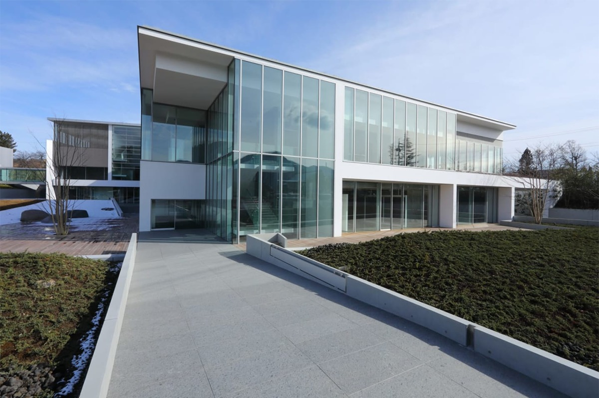
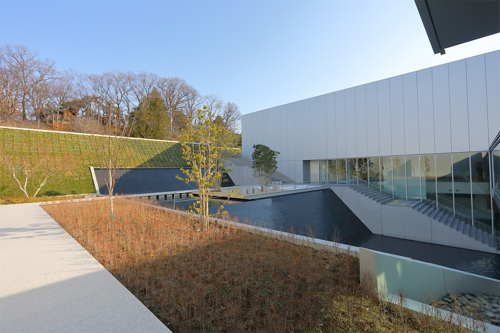
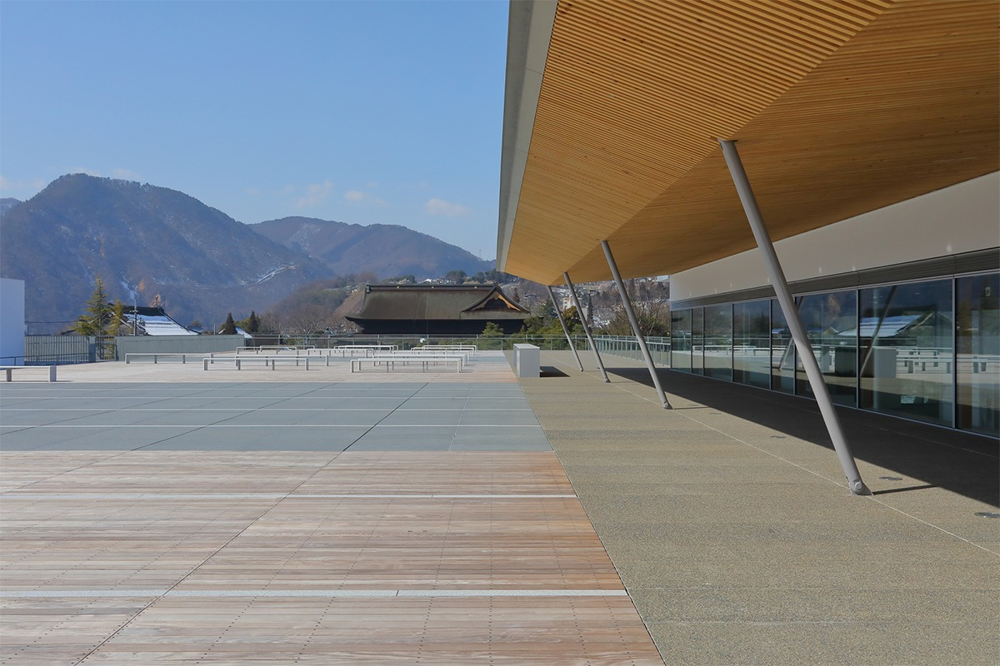
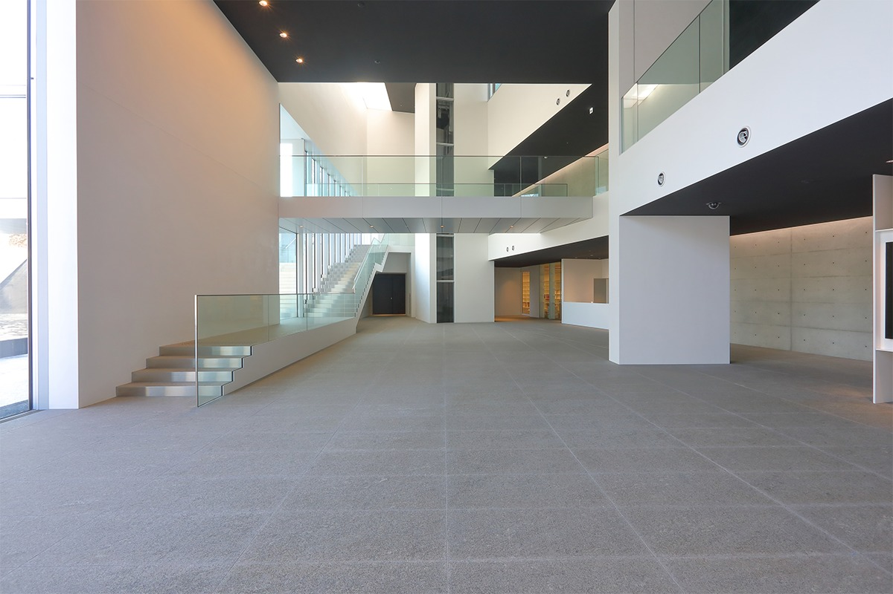
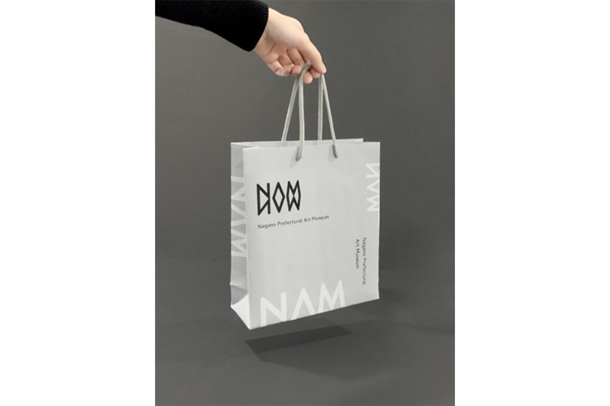
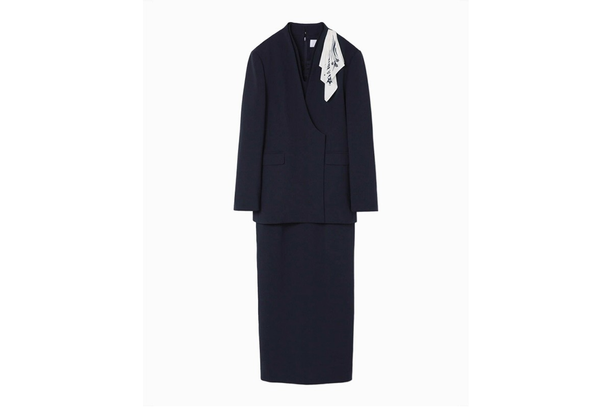
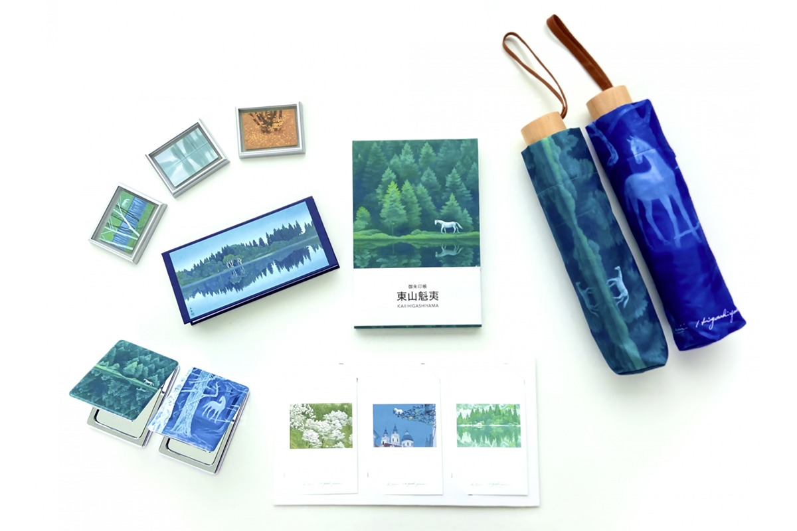

Префектура Нагано · Нагано · искусство
Префектурный художественный музей Нагано: музей-пейзаж по соседству с храмом Дзэнко-дзи

Четыре года главное здание художественного музея префектуры стояло закрытым, а 10 апреля 2021 года открылось заново, в новом доме и с новым названием. Его задумали как музей-пейзаж: здание вписано в окружающий вид и само создаёт новые.
Архитектура
Музей, который продолжает пейзаж
Художественный музей Синано префектуры Нагано закрыл главное здание на перестройку в 2017 году. 10 апреля 2021 года на его месте открылось новое, и музей получил имя Префектурный художественный музей Нагано. Он стоит в парке Сирояма, по соседству с храмом Дзэнко-дзи, главной святыней города.
Концепция нового здания называется «ландшафтный музей»: использовать красоту места и создавать новые виды. Проект выполнило архитектурное бюро Plants Associates. Между главным зданием и Залом Кайи Хигасиямы устроена «Терраса у воды».

На крыше находится открытая площадка «Терраса ветра». Отсюда прямо перед собой виден храм Дзэнко-дзи.

В собрании и выставках музей собирается следовать теме «человек и природа, живущие вместе». Сюда стоит приходить не спеша: пейзаж и искусство здесь дополняют друг друга.

Знак
Логотип как отражение в воде
Новый логотип вдохновлён пейзажами Нагано, богатыми лесами и водой. Его глубокий зелёный цвет означает местный лес. Буквы NAM, начальные буквы английского названия музея, изображены как стволы деревьев и отражены в воде зеркально, сверху вниз. По словам дизайнера, это образ «водного зеркала», которое часто встречается на картинах Хигасиямы, например на картине «Звучащая зелень».

Форма
Синий цвет Хигасиямы
Форму для сотрудниц к открытию в 2021 году придумала дизайнер японского модного бренда Mame Kurogouchi. Это платье с закруглённым кроем и двубортный жакет без воротника. Глубокий синий цвет, по её словам, навеян величественной природой вокруг музея и «синим Хигасиямы», цветом художника, который любил эти места. На шейном платке тёмно-синей нитью вышита горечавка, цветок-символ префектуры Нагано. Форму для мужчин музей подобрал сам, в том же духе.

Отдых
Ресторан, кафе и магазин
На 2-м этаже работает ресторан, и из-за любого столика во время еды виден храм Дзэнко-дзи. Кафе на 3-м этаже устроено так, чтобы туда было легко зайти по пути: с напитком в руке можно сразу выйти на «Террасу ветра».
В музейном магазине продают сувениры, придуманные специально для музея.

Учиться
Музей как место для разговора
По данным на март 2021 года, префектура Нагано заняла первое место в Японии по числу учреждений для непрерывного образования на душу населения: библиотек, музеев, домов культуры, концертных залов, спортивных и других центров. Префектурный художественный музей строит программы встреч с художниками, экскурсии и занятия. Искусство каждый видит по-своему, и музей хочет стать местом, где через него учатся понимать разнообразие людей и взглядов.
Префектурный художественный музей Нагано
- Адрес
- префектура Нагано, Нагано, Хакосимидзу, 1-4-4 (в парке Сирояма, к востоку от храма Дзэнко-дзи)
- Телефон
- +81 26-232-0052
- Часы работы
- 9:00–17:00 (вход до 16:30)
- Выходные
- среда (если на неё выпадает праздник, то следующий день)
- Цены / Вход
- постоянная экспозиция (главное здание и Зал Кайи Хигасиямы) 700 иен, студенты и посетители старше 75 лет 500 иен, школьники старших классов и младше 18 лет бесплатно; в дни, когда в главном здании нет выставки коллекции, 500 и 300 иен; временные выставки по отдельной цене